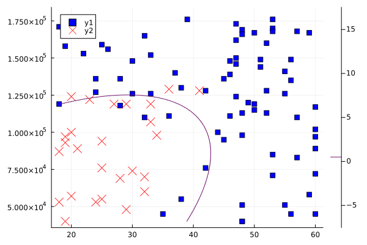

Tutorial
NLPModelsIpopt is a thin IPOPT wrapper for NLPModels. In this tutorial we show examples of problems created with NLPModels and solved with Ipopt.
Simple problems
Calling Ipopt is simple:
NLPModelsIpopt.ipopt — Functionoutput = ipopt(nlp; kwargs...)
Solves the NLPModel problem nlp using IpOpt.
Optional keyword arguments
x0: a vector of sizenlp.meta.nvarto specify an initial primal guessy0: a vector of sizenlp.meta.nconto specify an initial dual guess for the general constraintszL: a vector of sizenlp.meta.nvarto specify initial multipliers for the lower bound constraintszU: a vector of sizenlp.meta.nvarto specify initial multipliers for the upper bound constraints
All other keyword arguments will be passed to IpOpt as an option. See https://www.coin-or.org/Ipopt/documentation/node40.html for the list of options accepted.
Let's create an NLPModel for the Rosenbrock function
and solve it with Ipopt:
using NLPModels, NLPModelsIpopt
nlp = ADNLPModel(x -> (x[1] - 1)^2 + 100 * (x[2] - x[1]^2)^2, [-1.2; 1.0])
stats = ipopt(nlp)
print(stats)
******************************************************************************
This program contains Ipopt, a library for large-scale nonlinear optimization.
Ipopt is released as open source code under the Eclipse Public License (EPL).
For more information visit http://projects.coin-or.org/Ipopt
******************************************************************************
This is Ipopt version 3.12.10, running with linear solver mumps.
NOTE: Other linear solvers might be more efficient (see Ipopt documentation).
Number of nonzeros in equality constraint Jacobian...: 0
Number of nonzeros in inequality constraint Jacobian.: 0
Number of nonzeros in Lagrangian Hessian.............: 3
Total number of variables............................: 2
variables with only lower bounds: 0
variables with lower and upper bounds: 0
variables with only upper bounds: 0
Total number of equality constraints.................: 0
Total number of inequality constraints...............: 0
inequality constraints with only lower bounds: 0
inequality constraints with lower and upper bounds: 0
inequality constraints with only upper bounds: 0
iter objective inf_pr inf_du lg(mu) ||d|| lg(rg) alpha_du alpha_pr ls
0 1.0000000e+00 0.00e+00 2.00e+00 -1.0 0.00e+00 - 0.00e+00 0.00e+00 0
1 9.5312500e-01 0.00e+00 1.25e+01 -1.0 1.00e+00 - 1.00e+00 2.50e-01f 3
2 4.8320569e-01 0.00e+00 1.01e+00 -1.0 9.03e-02 - 1.00e+00 1.00e+00f 1
3 4.5708829e-01 0.00e+00 9.53e+00 -1.0 4.29e-01 - 1.00e+00 5.00e-01f 2
4 1.8894205e-01 0.00e+00 4.15e-01 -1.0 9.51e-02 - 1.00e+00 1.00e+00f 1
5 1.3918726e-01 0.00e+00 6.51e+00 -1.7 3.49e-01 - 1.00e+00 5.00e-01f 2
6 5.4940990e-02 0.00e+00 4.51e-01 -1.7 9.29e-02 - 1.00e+00 1.00e+00f 1
7 2.9144630e-02 0.00e+00 2.27e+00 -1.7 2.49e-01 - 1.00e+00 5.00e-01f 2
8 9.8586451e-03 0.00e+00 1.15e+00 -1.7 1.10e-01 - 1.00e+00 1.00e+00f 1
9 2.3237475e-03 0.00e+00 1.00e+00 -1.7 1.00e-01 - 1.00e+00 1.00e+00f 1
iter objective inf_pr inf_du lg(mu) ||d|| lg(rg) alpha_du alpha_pr ls
10 2.3797236e-04 0.00e+00 2.19e-01 -1.7 5.09e-02 - 1.00e+00 1.00e+00f 1
11 4.9267371e-06 0.00e+00 5.95e-02 -1.7 2.53e-02 - 1.00e+00 1.00e+00f 1
12 2.8189505e-09 0.00e+00 8.31e-04 -2.5 3.20e-03 - 1.00e+00 1.00e+00f 1
13 1.0095040e-15 0.00e+00 8.68e-07 -5.7 9.78e-05 - 1.00e+00 1.00e+00f 1
14 1.3288608e-28 0.00e+00 2.02e-13 -8.6 4.65e-08 - 1.00e+00 1.00e+00f 1
Number of Iterations....: 14
(scaled) (unscaled)
Objective...............: 1.3288608467480825e-28 1.3288608467480825e-28
Dual infeasibility......: 2.0183854587685121e-13 2.0183854587685121e-13
Constraint violation....: 0.0000000000000000e+00 0.0000000000000000e+00
Complementarity.........: 0.0000000000000000e+00 0.0000000000000000e+00
Overall NLP error.......: 2.0183854587685121e-13 2.0183854587685121e-13
Number of objective function evaluations = 36
Number of objective gradient evaluations = 15
Number of equality constraint evaluations = 0
Number of inequality constraint evaluations = 0
Number of equality constraint Jacobian evaluations = 0
Number of inequality constraint Jacobian evaluations = 0
Number of Lagrangian Hessian evaluations = 14
Total CPU secs in IPOPT (w/o function evaluations) = 1.129
Total CPU secs in NLP function evaluations = 0.365
EXIT: Optimal Solution Found.
Generic Execution stats
status: "first-order stationary"
objective value: 1.3288608467480825e-28
primal feasibility: 0.0
dual feasibility: 2.018385458768512e-13
solution: [0.9999999999999899 0.9999999999999792]
iterations: 14
elapsed time: 1.494
solver specific:
multipliers_U: [0.0 0.0]
multipliers_L: [0.0 0.0]
multipliers_con: ∅
internal_msg: :Solve_SucceededFor comparison, we present the same problem and output using JuMP:
using JuMP, Ipopt
model = Model(with_optimizer(Ipopt.Optimizer))
x0 = [-1.2; 1.0]
@variable(model, x[i=1:2], start=x0[i])
@NLobjective(model, Min, (x[1] - 1)^2 + 100 * (x[2] - x[1]^2)^2)
optimize!(model)┌ Warning: `with_optimizer` is deprecated. Adapt the following example to update your code:
│ `with_optimizer(Ipopt.Optimizer)` becomes `Ipopt.Optimizer`.
│ caller = top-level scope at make.jl:3
└ @ Core ~/build/JuliaSmoothOptimizers/NLPModelsIpopt.jl/docs/make.jl:3
This is Ipopt version 3.12.10, running with linear solver mumps.
NOTE: Other linear solvers might be more efficient (see Ipopt documentation).
Number of nonzeros in equality constraint Jacobian...: 0
Number of nonzeros in inequality constraint Jacobian.: 0
Number of nonzeros in Lagrangian Hessian.............: 3
Total number of variables............................: 2
variables with only lower bounds: 0
variables with lower and upper bounds: 0
variables with only upper bounds: 0
Total number of equality constraints.................: 0
Total number of inequality constraints...............: 0
inequality constraints with only lower bounds: 0
inequality constraints with lower and upper bounds: 0
inequality constraints with only upper bounds: 0
iter objective inf_pr inf_du lg(mu) ||d|| lg(rg) alpha_du alpha_pr ls
0 2.4200000e+01 0.00e+00 1.00e+02 -1.0 0.00e+00 - 0.00e+00 0.00e+00 0
1 4.7318843e+00 0.00e+00 2.15e+00 -1.0 3.81e-01 - 1.00e+00 1.00e+00f 1
2 4.0873987e+00 0.00e+00 1.20e+01 -1.0 4.56e+00 - 1.00e+00 1.25e-01f 4
3 3.2286726e+00 0.00e+00 4.94e+00 -1.0 2.21e-01 - 1.00e+00 1.00e+00f 1
4 3.2138981e+00 0.00e+00 1.02e+01 -1.0 4.82e-01 - 1.00e+00 1.00e+00f 1
5 1.9425854e+00 0.00e+00 1.62e+00 -1.0 6.70e-02 - 1.00e+00 1.00e+00f 1
6 1.6001937e+00 0.00e+00 3.44e+00 -1.0 7.35e-01 - 1.00e+00 2.50e-01f 3
7 1.1783896e+00 0.00e+00 1.92e+00 -1.0 1.44e-01 - 1.00e+00 1.00e+00f 1
8 9.2241158e-01 0.00e+00 4.00e+00 -1.0 2.08e-01 - 1.00e+00 1.00e+00f 1
9 5.9748862e-01 0.00e+00 7.36e-01 -1.0 8.91e-02 - 1.00e+00 1.00e+00f 1
iter objective inf_pr inf_du lg(mu) ||d|| lg(rg) alpha_du alpha_pr ls
10 4.5262510e-01 0.00e+00 2.42e+00 -1.7 2.97e-01 - 1.00e+00 5.00e-01f 2
11 2.8076244e-01 0.00e+00 9.25e-01 -1.7 1.02e-01 - 1.00e+00 1.00e+00f 1
12 2.1139340e-01 0.00e+00 3.34e+00 -1.7 1.77e-01 - 1.00e+00 1.00e+00f 1
13 8.9019501e-02 0.00e+00 2.25e-01 -1.7 9.45e-02 - 1.00e+00 1.00e+00f 1
14 5.1535405e-02 0.00e+00 1.49e+00 -1.7 2.84e-01 - 1.00e+00 5.00e-01f 2
15 1.9992778e-02 0.00e+00 4.64e-01 -1.7 1.09e-01 - 1.00e+00 1.00e+00f 1
16 7.1692436e-03 0.00e+00 1.03e+00 -1.7 1.39e-01 - 1.00e+00 1.00e+00f 1
17 1.0696137e-03 0.00e+00 9.09e-02 -1.7 5.50e-02 - 1.00e+00 1.00e+00f 1
18 7.7768464e-05 0.00e+00 1.44e-01 -2.5 5.53e-02 - 1.00e+00 1.00e+00f 1
19 2.8246695e-07 0.00e+00 1.50e-03 -2.5 7.31e-03 - 1.00e+00 1.00e+00f 1
iter objective inf_pr inf_du lg(mu) ||d|| lg(rg) alpha_du alpha_pr ls
20 8.5170750e-12 0.00e+00 4.90e-05 -5.7 1.05e-03 - 1.00e+00 1.00e+00f 1
21 3.7439756e-21 0.00e+00 1.73e-10 -5.7 2.49e-06 - 1.00e+00 1.00e+00f 1
Number of Iterations....: 21
(scaled) (unscaled)
Objective...............: 1.7365378678754519e-21 3.7439756431394737e-21
Dual infeasibility......: 1.7312156654298279e-10 3.7325009746667082e-10
Constraint violation....: 0.0000000000000000e+00 0.0000000000000000e+00
Complementarity.........: 0.0000000000000000e+00 0.0000000000000000e+00
Overall NLP error.......: 1.7312156654298279e-10 3.7325009746667082e-10
Number of objective function evaluations = 45
Number of objective gradient evaluations = 22
Number of equality constraint evaluations = 0
Number of inequality constraint evaluations = 0
Number of equality constraint Jacobian evaluations = 0
Number of inequality constraint Jacobian evaluations = 0
Number of Lagrangian Hessian evaluations = 21
Total CPU secs in IPOPT (w/o function evaluations) = 2.039
Total CPU secs in NLP function evaluations = 1.288
EXIT: Optimal Solution Found.Here is an example with a constrained problem:
n = 10
x0 = ones(n)
x0[1:2:end] .= -1.2
nlp = ADNLPModel(x -> sum((x[i] - 1)^2 + 100 * (x[i+1] - x[i]^2)^2 for i = 1:n-1), x0,
c=x -> [3 * x[k+1]^3 + 2 * x[k+2] - 5 + sin(x[k+1] - x[k+2]) * sin(x[k+1] + x[k+2]) +
4 * x[k+1] - x[k] * exp(x[k] - x[k+1]) - 3 for k = 1:n-2],
lcon=zeros(n-2), ucon=zeros(n-2))
stats = ipopt(nlp, print_level=0)
print(stats)Generic Execution stats
status: "first-order stationary"
objective value: 6.2324586324374645
primal feasibility: 8.881784197001252e-16
dual feasibility: 5.6614435361979076e-14
solution: [-0.9505563573613094 0.9139008176388945 0.9890905176644905 0.9985592422681151 ⋯ 0.9999999300651202]
iterations: 9
elapsed time: 2.6959999999999997
solver specific:
multipliers_U: [0.0 0.0 0.0 0.0 ⋯ 0.0]
multipliers_L: [0.0 0.0 0.0 0.0 ⋯ 0.0]
multipliers_con: [4.135856830500224 -1.8764949037033358 -0.06556333356356395 -0.02193186301809533 ⋯ -7.37631365857397e-6]
internal_msg: :Solve_SucceededReturn value
The return value of ipopt is a GenericExecutionStats instance from SolverTools. It contains basic information on the solution returned by the solver. In addition to the built-in fields of GenericExecutionStats, we store the following subfields in the solver_specific field:
multipliers_con: constraints multipliers;multipliers_L: variables lower-bound multipliers;multipliers_U: variables upper-bound multipliers;internal_msg: detailed Ipopt output message.
Here is an example using the constrained problem solve:
stats.solver_specific[:internal_msg]:Solve_SucceededManual input
In this section, we work through an example where we specify the problem and its derivatives manually. For this, we need to implement the following NLPModel API methods:
obj(nlp, x): evaluate the objective value atx;grad!(nlp, x, g): evaluate the objective gradient atx;cons!(nlp, x, c): evaluate the vector of constraints, if any;jac_structure!(nlp, rows, cols): fillrowsandcolswith the spartity structure of the Jacobian, if the problem is constrained;jac_coord!(nlp, x, vals): fillvalswith the Jacobian values corresponding to the sparsity structure returned byjac_structure!();hess_structure!(nlp, rows, cols): fillrowsandcolswith the spartity structure of the lower triangle of the Hessian of the Lagrangian;hess_coord!(nlp, x, y, vals; obj_weight=1.0): fillvalswith the values of the Hessian of the Lagrangian corresponding to the sparsity structure returned byhess_structure!(), whereobj_weightis the weight assigned to the objective, andyis the vector of multipliers.
The model that we implement is a logistic regression model. We consider the model $h(\beta; x) = (1 + e^{-\beta^Tx})^{-1}$, and the loss function
with regularization $\lambda \|\beta\|^2 / 2$.
using DataFrames, LinearAlgebra, NLPModels, NLPModelsIpopt, Random
mutable struct LogisticRegression <: AbstractNLPModel
X :: Matrix
y :: Vector
λ :: Real
meta :: NLPModelMeta # required by AbstractNLPModel
counters :: Counters # required by AbstractNLPModel
end
function LogisticRegression(X, y, λ = 0.0)
m, n = size(X)
meta = NLPModelMeta(n, name="LogisticRegression", nnzh=div(n * (n+1), 2) + n) # nnzh is the length of the coordinates vectors
return LogisticRegression(X, y, λ, meta, Counters())
end
function NLPModels.obj(nlp :: LogisticRegression, β::AbstractVector)
hβ = 1 ./ (1 .+ exp.(-nlp.X * β))
return -sum(nlp.y .* log.(hβ .+ 1e-8) .+ (1 .- nlp.y) .* log.(1 .- hβ .+ 1e-8)) + nlp.λ * dot(β, β) / 2
end
function NLPModels.grad!(nlp :: LogisticRegression, β::AbstractVector, g::AbstractVector)
hβ = 1 ./ (1 .+ exp.(-nlp.X * β))
g .= nlp.X' * (hβ .- nlp.y) + nlp.λ * β
end
function NLPModels.hess_structure!(nlp :: LogisticRegression, rows :: AbstractVector{<:Integer}, cols :: AbstractVector{<:Integer})
n = nlp.meta.nvar
I = ((i,j) for i = 1:n, j = 1:n if i ≥ j)
rows[1 : nlp.meta.nnzh] .= [getindex.(I, 1); 1:n]
cols[1 : nlp.meta.nnzh] .= [getindex.(I, 2); 1:n]
return rows, cols
end
function NLPModels.hess_coord!(nlp :: LogisticRegression, β::AbstractVector, vals::AbstractVector; obj_weight=1.0, y=Float64[])
n, m = nlp.meta.nvar, length(nlp.y)
hβ = 1 ./ (1 .+ exp.(-nlp.X * β))
fill!(vals, 0.0)
for k = 1:m
hk = hβ[k]
p = 1
for j = 1:n, i = j:n
vals[p] += obj_weight * hk * (1 - hk) * nlp.X[k,i] * nlp.X[k,j]
p += 1
end
end
vals[nlp.meta.nnzh+1:end] .= nlp.λ * obj_weight
return vals
end
Random.seed!(0)
# Training set
m = 1000
df = DataFrame(:age => rand(18:60, m), :salary => rand(40:180, m) * 1000)
df[:buy] = (df.age .> 40 .+ randn(m) * 5) .| (df.salary .> 120_000 .+ randn(m) * 10_000)
X = [ones(m) df.age df.age.^2 df.salary df.salary.^2 df.age .* df.salary]
y = df.buy
λ = 1.0e-2
nlp = LogisticRegression(X, y, λ)
stats = ipopt(nlp, print_level=0)
β = stats.solution
# Test set - same generation method
m = 100
df = DataFrame(:age => rand(18:60, m), :salary => rand(40:180, m) * 1000)
df[:buy] = (df.age .> 40 .+ randn(m) * 5) .| (df.salary .> 120_000 .+ randn(m) * 10_000)
X = [ones(m) df.age df.age.^2 df.salary df.salary.^2 df.age .* df.salary]
hβ = 1 ./ (1 .+ exp.(-X * β))
ypred = hβ .> 0.5
acc = count(df.buy .== ypred) / m
println("acc = $acc")┌ Warning: `setindex!(df::DataFrame, v::AbstractVector, col_ind::ColumnIndex)` is deprecated, use `begin
│ df[!, col_ind] = v
│ df
│ end` instead.
│ caller = top-level scope at make.jl:3
└ @ Core ~/build/JuliaSmoothOptimizers/NLPModelsIpopt.jl/docs/make.jl:3
┌ Warning: `setindex!(df::DataFrame, v::AbstractVector, col_ind::ColumnIndex)` is deprecated, use `begin
│ df[!, col_ind] = v
│ df
│ end` instead.
│ caller = top-level scope at make.jl:3
└ @ Core ~/build/JuliaSmoothOptimizers/NLPModelsIpopt.jl/docs/make.jl:3
acc = 0.93using Plots
gr()
f(a, b) = dot(β, [1.0; a; a^2; b; b^2; a * b])
P = findall(df.buy .== true)
scatter(df.age[P], df.salary[P], c=:blue, m=:square)
P = findall(df.buy .== false)
scatter!(df.age[P], df.salary[P], c=:red, m=:xcross, ms=7)
contour!(range(18, 60, step=0.1), range(40_000, 180_000, step=1.0), f, levels=[0.5])